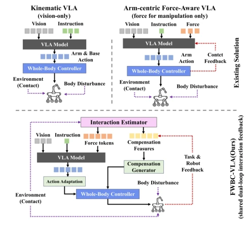
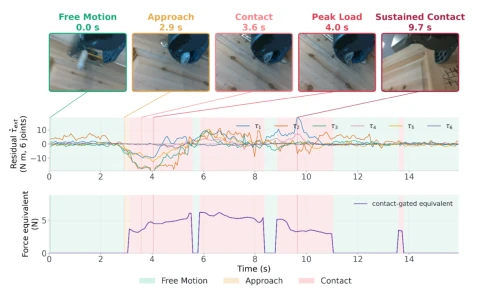
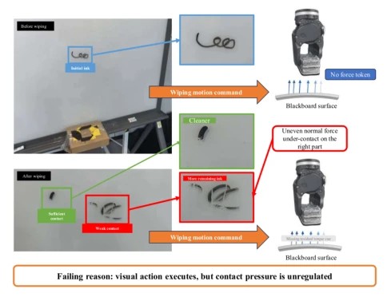
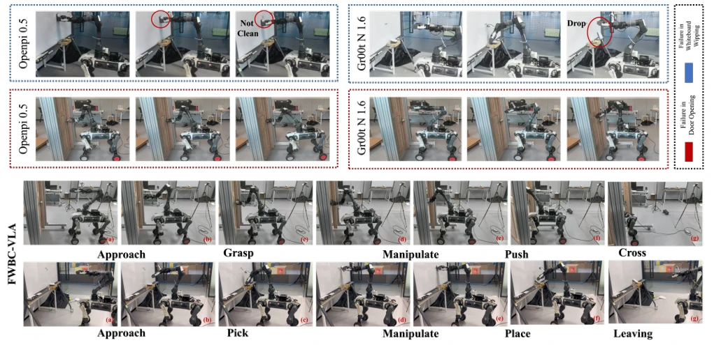
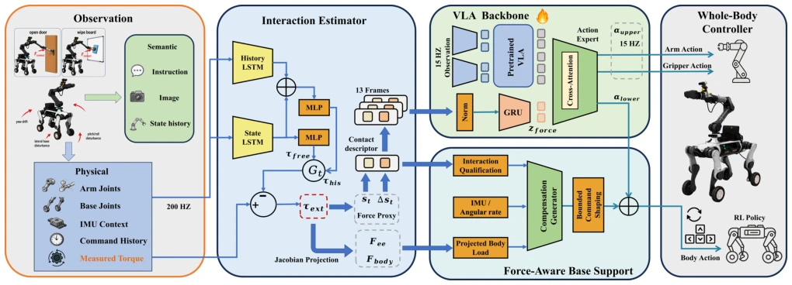

This paper attempts to address the issue of VLA models "blindly groping" in contact tasks, employing a sensorless solution to replace expensive force control hardware, an approach that is quite appealing. HSR-Force utilizes a dual LSTM to infer force; although no physical sensors are employed, the performance can actually rival real force data, which is commendable. However, directly integrating force estimation into the VLA's Action Expert may cause the model to overfit the dynamic characteristics of a specific platform, especially since cross-platform generalization is not mentioned. Experiments demonstrate satisfactory performance on typical contact tasks such as wiping blackboards and opening doors, but whether the "sensorless" robustness remains firm under complex terrain or severe disturbances remains questionable. Overall, it is a pragmatic improvement for engineering deployment, though the theoretical depth appears slightly conservative, representing a "it works" pragmatic school.
研究动机Motivation
现有 VLA 模型（如 OpenVLA, Kim et al. 2025）擅长语义动作生成，却缺乏对物理交互的感知，导致接触任务中容易失控。虽然全身体控制（WBC）能稳定本体，但无法区分任务相关力与外部扰动（Hou et al. 2025b）。引入力/力矩传感器虽直接，但硬件成本高、集成难，尤其对非原生设计平台不友好。现有接触感知方法多聚焦机械臂，忽略了对移动基座的影响（Yu et al. 2025）。因此，亟需一种无需额外硬件的力感知接口，既能指导 VLA 动作生成，又能触发 WBC 补偿，填补语义规划与物理控制间的鸿沟。
Existing VLA models (e.g., OpenVLA, Kim et al. 2025) excel at semantic action generation but lack perception of physical interaction, leading to instability in contact tasks. Although Whole Body Control (WBC) can stabilize the manipulator, it cannot distinguish task-related forces from external disturbances (Hou et al. 2025b). Introducing force/torque sensors is direct, yet hardware costs are high and integration is difficult, particularly challenging for non-native designed platforms. Existing contact perception methods mostly focus on manipulators, neglecting the impact on the mobile base (Yu et al. 2025). Therefore, there is an urgent need for a force sensing interface requiring no additional hardware, capable of guiding VLA action generation and triggering WBC compensation, thereby bridging the gap between semantic planning and physical control.

Figure 1: Comparison of VLA loco-manipulation paradigms. Kinematic whole-body VLA uses no explicit interaction feedback. Arm-centric force-aware VLA uses force for task adaptation but ignores body-level effects. We leverage a sen- sorless interaction estimator to construct dual feedback loops for both task actions and body compensation.
The framework is divided into three parts: sensorless interaction estimation, VLA action generation, and whole-body compensation. First, HSR-Force synchronously estimates joint torque residuals through a dual LSTM network (History Expert + State Expert), utilizing fixed gating to fuse both and outputting contact descriptors. Second, contact history is encoded as force tokens and injected into the VLA's Action Expert (based on π0.5) via cross-attention, enabling the policy to perceive the contact state. Finally, the Jacobian matrix is used to project torque residuals as end-effector and base loads; combined with attitude deviation input to the compensation generator, it outputs base velocity corrections. The VLA outputs task actions, which are superimposed with compensation actions and sent to WBC for execution. The entire process maintains causality; force estimation does not rely on future information, and compensation actions undergo bounded processing to prevent loss of control.

Figure 4: Video-aligned contact estimation of door opening.
Utilizing the self-constructed WL&Arm dataset (5000+ teleoperations), covering tasks such as wiping blackboards and opening doors. Baselines include OpenVLA, ForceVLA, etc. The evaluation metric is the success rate at each stage. Results show that FWBC-VLA outperforms baselines in both wiping blackboard and opening door tasks, with a particularly obvious advantage in the continuous contact stage (e.g., a 40 percentage points improvement in the door pushing stage of opening doors). Ablation experiments indicate that the force sensing interface (FI) improves operation success rates, while whole-body compensation (BC) significantly enhances stability under high loads. The force estimator HSR-Force demonstrates errors superior to baselines such as NEXT and GMO-SI under both zero-load and known-load conditions, proving the viability of the sensorless scheme.

Figure 5: Effect of removing force conditioning during white- board wiping.

Figure 6: Representative real-world rollouts. Baseline failures on both tasks (top). FWBC-VLA succeeds in whiteboard wiping and door opening (bottom).
其他图片Other Figures

Figure 3: FWBC-VLA framework introduces a sensorless, force-aware interface between the VLA and WBC policies. The esti- mator transforms proprioceptive states into causal interaction representations, which are shared across two branches: interaction- conditioned action generation for VLA, and task-relevant body compensation for WBC.